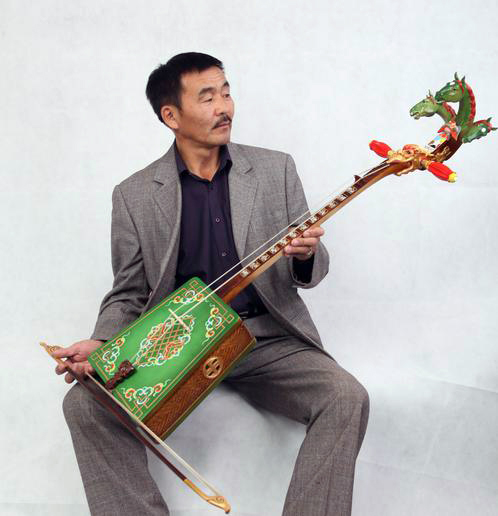
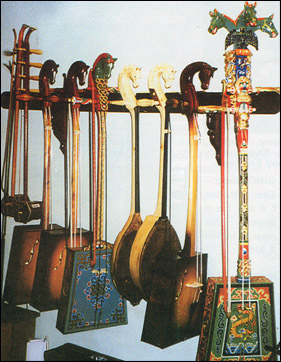

National Music Instrument
One of most classic national musical instruments of the Mongols is the Morin Khuur or horsehead fiddle. Mongolian folk songs are usually accompanied by instruments, often the morin huur ("horse fiddle"). The name varies somewhat among different tribes: the instrument may sometimes be called shanagan huur or "scoop violin" after the shape of the body. The morin huur carne into being in the second century BC, during the rule of the Huns, but in its long history it has undergone several changes. Initially, the end (peg-box) of the instrument was carved in the shape of a dragon, the legendary garuda bird head. From the nineteenth century onwards, this was replaced by a horse's head and s o the name morin huur came into being. The sound-box of a typical morin huur is in the shape of a trapezoid, the bottom part of which is slightly wider than the top. The ribs were traditionally made of four laths of wood, with the surface and back of the instrument covered most commonly with hide or thin brass plate, and the sound-box was generally painted and in some cases richly ornamented. Today, however, the sound-box is made wholly of lacquered wood, with the top and back soundboards swelling out slightly, similar to instruments of the European violin family. The sound-holes are f-shaped and cut into the top sound-board, and the instrument has a soundpost under and off the side of the bridge. A s a result of these changes in constriction, the tone and timbre have become louder and richer.

The morin khuur has two strings, made of strands of black or white horsehair, not woven together but running side by side. The two strings were usually tuned a fifth apart, but more recently they have come to b e tuned a fourth apart, which has made the finger positions of the left hand easier. The range is three octaves. All these changes have made it possible to play contemporary and classical music. There are many legends about the origin of the morin huur. One tradition has it that there once lived a man, Khokhoo Namjil, who had an extraordinarily fast and winged horse. A jealous woman cut off the horse's wings, so that it died, and to demonstrate his love for the beast Khokhoo Namjil made a morin huur, whose peg-box was carved in the shape of the horse's head and whose strings were made of the hairs of the horse's head and tail. It is said that when Khokhoo Namjil played the morin khuur it gave a vivid impression of the neighing and hoof beats of his horse.
Other instruments since ancient times, the Mongols have had quite original and diverse instruments (wind, string, percussion, etc), such as the tsuur, buree, byalar bishguur, aman khuur, tovshuur, hill huuchir, hats, dungereg and havtgai hengereg. Historical sources show that Chinggis Khaan, Ogedei Khaan and Kubilai Khaan kept large troupes of dancers and orchestras including hundreds of musicians in their courts.

The instruments used by the Mongols include the indigenous and the borrowed, and many of them are widely known and used in other countries of the East. The most notable are the yatag (Chinese Cheng, Japanese koto), which has a long, wooden, rectangular body with a slightly curved sound-board over which 10 or 14 strings are stretched across movable bridges; the yoochin or dulcimer (Chinese yang ch'in), in which 14 double metal courses are stretched over a flat trapezi form body and are struck with two hammers; and the shudrag (Chinese san-hsien, Japanese samisen), which is a long- necked lute with three plucked or bowed strings. Many types of whistles, reeds and pipes are also used. The best-known wind instrument is the bamboo limbe (transverse flute), a simple straight tube which has at least eight holes. One special technique used in limbe playing is bituu amisgal (blind breath), which is a form of circular breathing which allows the musician to play a long melody without stopping for breath.
Mongolian music is anhemitonic pentatonic. There is no indigenous musical notation, although certain ancient texts refer to "high register" and "low register", indicating ornamentation, which was actually borrowed from China, Tibet or India and later used in temple music.